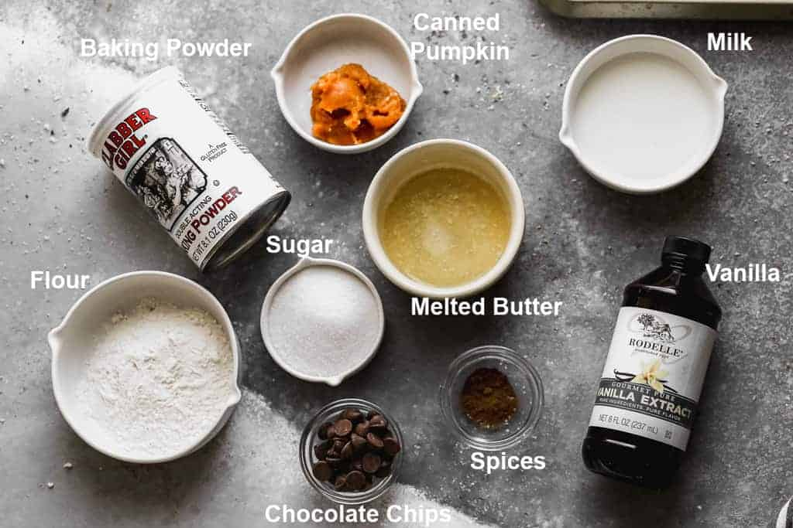
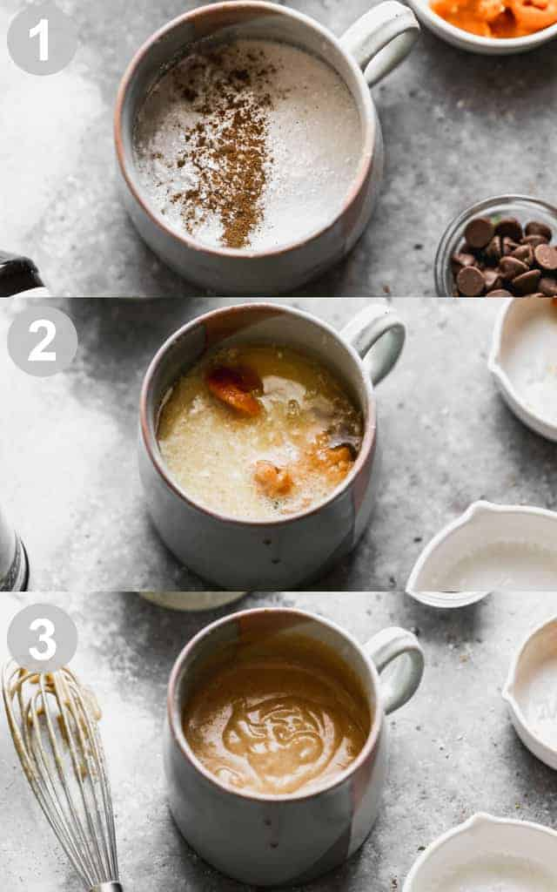

<- Go back :)
Pumpkin mug cake in 2-3 mins!

Do you sometimes feel THAT craving for something sweet but you just don't want to go
grab a cake to your nearest supermarket, or sometimes you just want something freshly baked,
but don't want the hassle of having to clean EEEEVERYTHING afterwards?
Then this recipe is exactly what you're looking for!
Here I'm going to teach you exactly what you need and the simple steps to cater to your cravings!
*Ingredients*:
- ¼ cup all-purpose flour
- 3 Tablespoons granulated sugar
- 1/8 teaspoon ground cinnamon
- ¼ teaspoon pumpkin pie spice
- ¼ teaspoon baking powder
- Pinch Salt
- 2 Tablespoons milk
- 1 Tablespoon canned pumpkin
- 1 Tablespoon melted butter
- Dash vanilla extract
- 1 Tablespoon chocolate chips, if desired, or serve with a dollop of whipped cream

Instructions:
- Add flour, sugar, cinnamon, pumpkin pie spice, baking powder, and salt to a mug and stir together
- Stir in milk, pumpkin, melted butter and vanilla extract until smooth, being sure to scrape the bottom of the mug.
Stir in chocolate chips, if desired.
- Cook in microwave for 70-90 seconds* (until cake is just set, but still barely shiny on top).
Allow to rest in microwave for 1 minute before consuming.

**Pro Tips**
- Cook time: All microwaves are different so it’s difficult to give a precise cook time. Start with 70 seconds,
wait 1 minute while it cools, then look to see if it is set. Add an additional 15-25 seconds if needed.
Allow it to rest in the microwave for 1 minute.
ENJOY!! :)